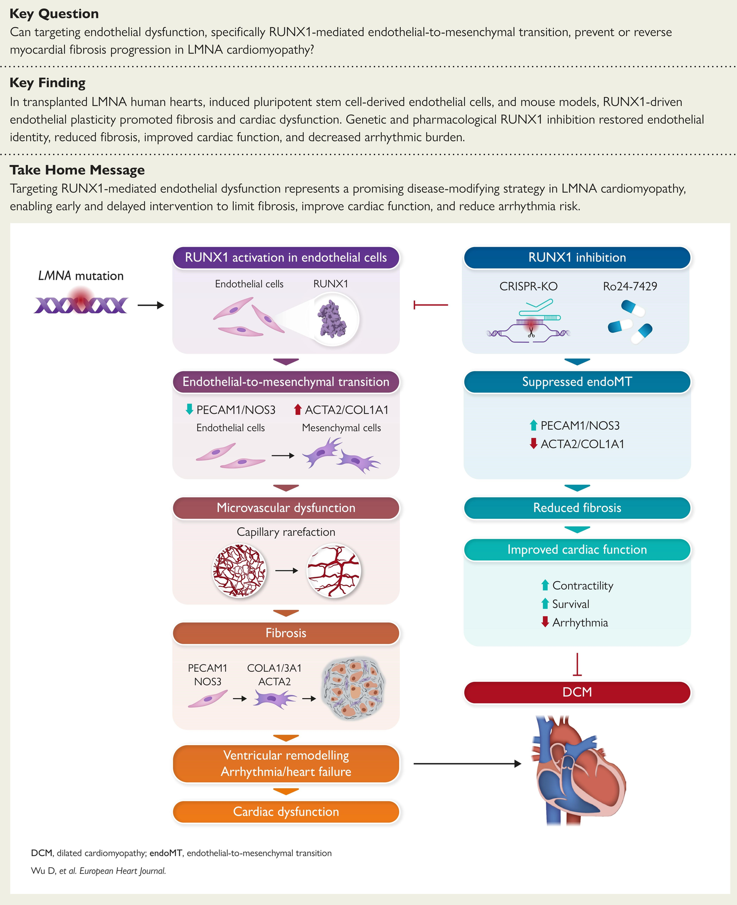

European Heart Journal

RUNX1-driven EndoMT in LMNA cardiomyopathy
New work in European Heart Journal identifies a RUNX1-driven endothelial remodeling program in LMNA cardiomyopathy.
Read the publicationResearch discoveries, team achievements, and moments from lab life.

New work in European Heart Journal identifies a RUNX1-driven endothelial remodeling program in LMNA cardiomyopathy.
Read the publicationCelebrating scientific contributions, trainee successes, and lab milestones.
Dr. Sayed delivered a seminar at the University of Memphis.
Dr. Sayed organized the annual Paul Baszucki Research Day.
Awarded for the project “Leveraging iPSC Models to Study Endothelial Dysfunction in Vascular Ehlers-Danlos Syndrome.”
Recognized by the VESS Grants & Awards Committee as the 2026 Resident Research Award winner.
Presentation at Synergy for Science 2026 in Glasgow, Scotland.
Awarded Department of Defense research funding.
Awarded for “Modeling Endothelial Dysfunction in Varicose Veins Using iPSCs and Single Cell Technology.”
Selected for the NHLBI-funded Vascular Disease T32 Training Program.
Presentation in Kalamata, Greece.
Awarded the NIH R35 Emerging Investigator Award.
Awarded for “Defining endothelial vulnerability underlying aneurysm formation using patient-derived vascular model.”
Recognized by the Cardiovascular Institute Community Committee.
Presentation at the University of Arizona’s Sarver Heart Center CV Research Symposium.
Lab photos, celebrations, conferences, and moments together.